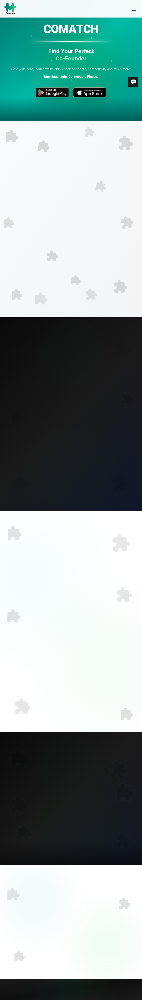
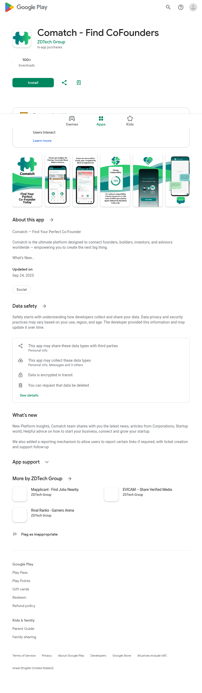
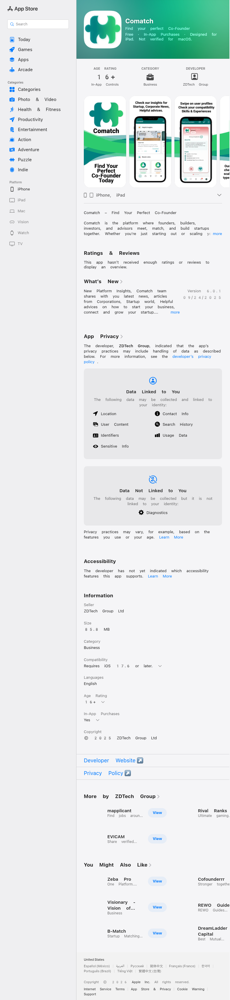

Profile
- Company
- Comatch
- Url
- https://comatch.me/
- Source Category
- Direct competitors
- Research Status
- Deep Cited Research / Draft Complete
- Current Status
- live - re-verified 2026-07-19 by direct fetch (HTTP 200, active marketing site with working App Store/Google Play download links). App Store listing (id6743527410) confirms app is live with recent updates (v6.0.1, Sept 24 2025), so the actual product is the mobile app; comatch.me is a marketing/download landing page rather than a functional web app.
- Founded Launch Year
- Exact founding year not publicly disclosed; app has version history back through at least v5.x, suggesting initial release circa 2024-2025. Founder referred to only by first name 'Sohan' in available sources.
- Company Age
- ~1-2 years (estimated from app version history)
- Hq Country
- not found / no public source (developer entity is ZDTech Group Ltd / ZDTech LLC; no HQ country disclosed in App Store/Play Store metadata found)
- Operating Area
- Global (app distributed via App Store/Google Play with no stated geographic restriction; supports English, Arabic, French, Ukrainian)
- Target Users
- Individual entrepreneurs/'business professionals' seeking a co-founder, defined by role identity (investor, builder, or all-around co-founder) and MBTI-style personality type
- Product Category
- swipe/card matchmaking; cofounder matching; in-app messaging/collaboration; personality-based AI matching. No founder-investor capital or data-room feature found.
Product Flows
- Swipe Card Interface
- yes
- Mutual Match
- yes
- Ai Matching Scoring
- yes - neural/personality algorithm matching
- Ai Deck Scoring
- not found / no public source - no pitch deck or business plan AI scoring feature found; Comatch has no capital-raising component at all
- Founder To Founder Flow
- yes - cofounder matching flow
- Founder To Investor Flow
- Not applicable - Comatch has no investor-side product; identity types are 'investor, builder, or all-around co-founder' but the described flow and marketing are entirely cofounder-matching, with no evidence of a distinct capital-raising/investor discovery flow, data room, or deal terms feature.
- Project Profiles
- Yes in a limited sense - users can 'Post Ideas' with requirements (experience, team size, industry) that function as lightweight project postings that other users can request to join; not a structured multi-field project profile
- Messaging Collaboration
- yes - private chat/workspace
- Mobile App
- yes - confirmed live on Apple App Store (https://apps.apple.com/us/app/comatch/id6743527410, v6.0.1 as of Sept 2025) and Google Play (com.comatch.comatch, developer ZDTech LLC)
- Web App
- yes
Security & Documents
- Nda Gated Unlock
- not found / no public source - 'Fast & Secure... encrypted data sharing and storage' is generic security marketing language, not a documented NDA-gate step (contradicts original automated pass which marked 'yes')
- Data Room
- not found / no public source - no data room, financials, or document vault feature found; product is purely matching + chat + idea posts
- E Signature
- not found / no public source - no e-signature feature documented anywhere (contradicts original automated pass which marked 'yes'; likely a keyword false-positive on 'secure')
- Meeting Prep Ai Briefing
- not found / no public source
Pricing, Funding & Traction
- Pricing Model
- Freemium with in-app purchases ranging $14.99-$119.99 annually (per App Store listing); specific tier/feature breakdown not disclosed
- Business Model
- B2C freemium mobile app monetized via in-app subscription purchases
- Total Funding
- not found / no public source - no Crunchbase/press funding record found; appears to be an independently/self-funded small studio (ZDTech Group Ltd). NOTE: not the consulting-matchmaker 'Comatch' (Germany, founded 2014, ex-McKinsey), which raised ~EUR12M (EUR4M Series A + EUR8M Series B); those figures do NOT belong to this cofounder-matching app.
- Funding Rounds
- not found / no public source
- Investors
- not found / no public source
- Funding Source Type
- Likely bootstrapped/self-funded (no external funding evidence found)
- Last Funding Date
- not found / no public source
- Users Traction
- not found / no public source - no disclosed user counts; App Store shows the app 'hasn't received enough ratings or reviews to display an overview', indicating a small install base
- Deals Funding Facilitated
- not applicable - product has no capital/funding-facilitation feature
- Partnerships
- not found / no public source
- Media Coverage
- not found / no public source - no press coverage (TechCrunch, etc.) found for Comatch
- Product Update Activity
- Active - App Store version history shows regular releases: v6.0.1 (Sept 2025, platform insights/news), v6.0.0 (major UI redesign, new home screen), v5.5.3 (expanded profile fields), v5.5.2 (compatibility meter enhancements), indicating ongoing iterative development
- Acquisition Rebrand History
- not found / no public source
Scores
- Product Overlap Score
- 4
- Feature Maturity Score
- 3
- Market Traction Score
- 2
- Funding Strength Score
- 1
- Ai Depth Score
- 2
- Nda Security Strength Score
- 1
- Network Moat Score
- 1
- Direct Threat Score
- 2.0
- Source Confidence
- Medium
Evidence Notes
- Primary Sources
- https://comatch.me/
https://apps.apple.com/us/app/comatch/id6743527410
https://play.google.com/store/apps/details?id=com.comatch.comatch
https://comatch.ai/ - Secondary Sources
- https://www.appbrain.com/app/comatch-find-cofounders/com.comatch.comatch
https://play.google.com/store/apps/dev?id=5035709862683919925
https://app.dealroom.co/companies/comatch
https://www.crunchbase.com/organization/comatch - Unsupported Claims
- Founding year and HQ country could not be verified from any public source despite search; founder identified only by first name 'Sohan' in one indirect source, not independently confirmed.
- Contradictions
- Original automated pass marked nda_gated_unlock and e_signature as 'yes' and web_app as 'yes' - real research found no NDA/e-sign evidence, and the 'web app' is a marketing/download page, not a usable product surface. Downgraded accordingly.
- Last Checked
- 2026-07-19
- Notes
- Smallest, least-funded, least-press-covered company in the batch relative to feature claims; appears to be a small independent studio (ZDTech) rather than a venture-backed competitor, though the app itself shows real, ongoing development activity (frequent version updates).
Registration Flow
Research date: 2026-07-19. Screenshots are sanitized public copies from the private registration-flow capture set; credentials, tokens, verification links/codes, browser chrome, and private identifiers are not intentionally published.
Outcome: product/app flow not applicable to browser account registration.
Stop point: Official native-app download/install gate before registration or onboarding
Blocker / boundary: Comatch provides no browser-based registration flow. The official website routes users to native Android and iOS apps, and continuing would require installing and operating the mobile app outside the authorized automated browser Chromium workflow. The store listings also disclose optional paid Premium features/in-app purchases.
- Official public homepage. Comatch's official website presents the product as a co-founder matching app and directs visitors to download it from Google Play or the Apple App Store. No web registration, sign-in, or account-creation form is offered.
- Official Google Play listing. The official Android listing identifies Comatch - Find CoFounders by ZDTech Group and offers an Install action. The listing describes role selection and profile/matching features, while also disclosing in-app purchases and Premium Membership features.
- Official Apple App Store listing. The official iOS/iPadOS listing confirms the app is free to download with in-app purchases and lists founder, builder, investor, and advisor roles. Registration cannot be continued in the automated browser web session because onboarding occurs inside the native mobile app. A supplementary live re-check of the official homepage performed today confirmed no browser-based sign-up form exists; the only interactive "Get Started" control scrolls within the homepage, and the on-page phone graphic showing email/password/Google sign-in fields is static marketing artwork, not a live form.


